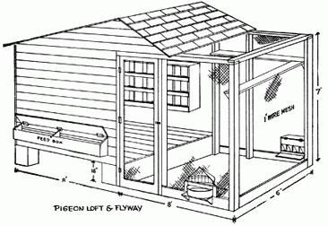

(Courtesy U. S. Dept Agri.)
House is shown with open front. Wood or cardboard partition can be used to close two thirds of opening for winter months. Note that feed trough, water fountain and grit hopper can all be ""serviced"" without entering pen.